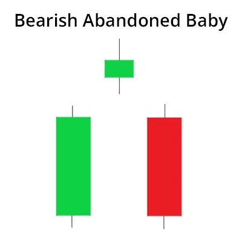

बियरिश अबैंडन्ड बेबी पैटर्न डाउनट्रेंड के ऊपरी सीमा पर विपरीत चेतावनी देता है और व्यापारियों द्वारा खरीदी गई स्थिति से बाहर निकलने और शॉर्ट पोजीशन में जाने के लिए इस्तेमाल किया जाता है।
इसमें तीन कैंडलस्टिक होते हैं जो एक उपट्रेंड के अंत में बनते हैं।
पहला कैंडलस्टिक एक बड़ा बुलिश कैंडल होता है जिसके बाद एक डोजी कैंडल आता है जो गैप अप करता हुआ होता है।
तीसरा कैंडलस्टिक डोजी से कम खोलता है और आमतौर पर एक बियरिश कैंडल होता है।
इस पैटर्न के बाद, व्यापारियों की उम्मीद होती है कि कीमत नीचे जारी रहेगी और बेयर्स वापस काम करने लगते हैं।
| Formation of Abandoned Baby Pattern: |

| What does Abandoned Baby Candlestick Pattern tell us? |
जैसा कि हमने पहले चर्चा की है, त्यागी शिशु पैटर्न एक उल्टी चाल के कैंडलस्टिक पैटर्न होता है।
एक बलशाली छोड़ा हुआ शिशु पैटर्न बताता है कि भालुओं की खरीदारी दबाव समाप्त हो गई है और बाजार में सांडों की वापसी हो रही है।
दूसरी ओर, त्यागी शिशु पैटर्न बताता है कि भालुओं को छोड़ा जा रहा है और बाजार में सांडों की वापसी की घोषणा होती है।
एक बलशाली त्यागी शिशु के गठन के पीछे मनोवैज्ञानिक विचार है कि पहले कैंडल में बेचई की बड़ी मात्रा शामिल होती है।
इस कारण से, एक उड़ता हुआ सांड कैंडल स्थापित होता है।
उसके बाद एक दोजी कैंडल पैटर्न स्थापित होता है, जो साबित करता है कि अब बाजार अनिश्चित है कि खुलने और बंद होने वाली कीमतें एक ही हैं या नहीं।
इस मामले में, यह इस बात को दर्शाता है कि सांड अपनी पकड़ को खो रहे हैं और भालुओं को बाजार पर नियंत्रण हासिल हो रहा है।
तीसरी बलशाली मोमबत्ती यह सत्यापित करती है कि ट्रेंड एक उपट्रेंड से उल्टा हो गया है और दोजी से ऊपर गैप किया गया है।
बिकट अबैंडन्ड बेबी के गठन के पीछे मनोवैज्ञानिक रूप से यह सुझाव दिया जाता है कि बाजार में पहली मोमबत्ती में एक महत्वपूर्ण खरीदारी देखी गई थी।
इसी कारण से, एक बलशाली मोमबत्ती बनी है।
दोजी उसके बाद बनती है, जो सत्यापित करती है कि अब बाजार अस्थिर हो गया है कि क्या खुलने और बंद होने की कीमतें समान हैं।
इस मामले में, यह इस बात का संकेत देता है कि बैंयर्स अपनी पकड़ खो रहे हैं और बाज़ अब उनके नियंत्रण से बाहर होने के लिए है।
तीसरी बायां मोमबत्ती यह सत्यापित करती है कि ट्रेंड एक डाउनट्रेंड से उलटा हो गया है और दोजी से नीचे गैप किया गया है।
| Trading with Abandoned Baby Candlestick Pattern: |
ट्रेडर्स को जब वे इस कैंडलस्टिक पैटर्न के साथ ट्रेड करते हैं तो निम्नलिखित बातों को याद रखना चाहिए:
बुलिश एबैंडन्ड बेबी के मामले में, ट्रेडर डोजी के डाउन शैडो के नीचे एक स्टॉप-लॉस लगा सकते हैं।
इसी तरह, बियरिश एबैंडन्ड बेबी के मामले में, ट्रेडर डोजी के ऊपरी शैडो के ऊपर एक स्टॉप-लॉस लगा सकते हैं।
ट्रेडर फिबोनाची रिट्रेसमेंट, या मूविंग एवरेज जैसे अन्य ट्रेडिंग टूल के साथ इस पैटर्न के गठन की पुष्टि करना चाहिए।
| Key Takeaways: |